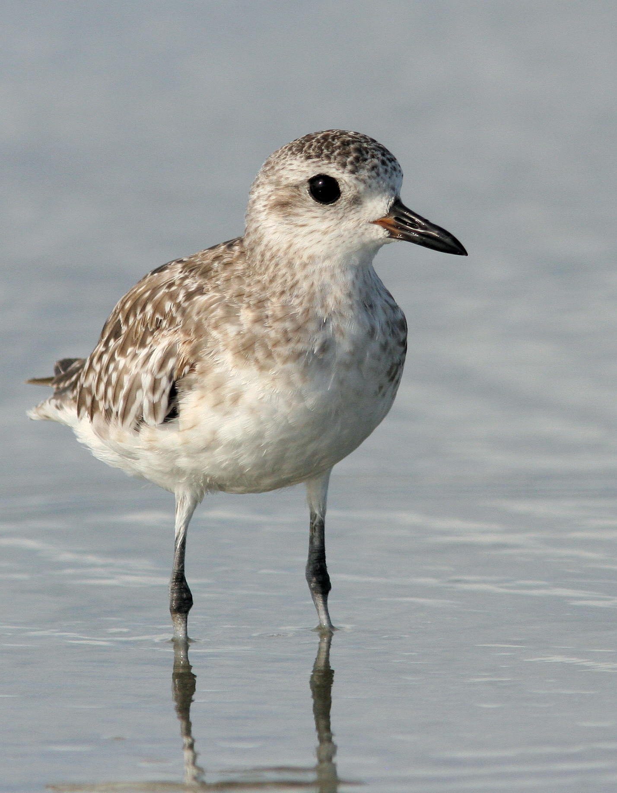

Pluvialis squatarola — Un nicheur arctique relié aux estrans arabes
Identité et identification
Le Pluvier argenté appartient aux Charadriidés et conserve le nom Pluvialis squatarola dans AviList 2026. Son corps assez massif, sa grosse tête, son bec noir court et robuste et ses pattes sombres contribuent à l’identification. En hiver, le dessus est gris moucheté et le dessous surtout blanc. Son aspect de novembre sur les côtes arabes diffère donc nettement de sa livrée nuptiale.
Âge, sexe et espèces proches
En plumage nuptial, la face, la poitrine et le ventre deviennent noirs, encadrés de blanc. Les femelles présentent généralement moins de noir continu, mais les variations individuelles et la mue empêchent souvent de déterminer le sexe à distance. Le jeune possède un dessus ponctué de teintes jaunâtres. Les plumes axillaires noires, sous l’aile, constituent le meilleur critère pour le séparer des pluviers dorés dans tous les plumages. Il convient d’attendre un étirement ou un envol spontané, sans provoquer le départ de l’oiseau. Une photographie isolée ne suffit pas toujours à préciser son âge ou son sexe.
Habitats, alimentation et comportement
Hors reproduction, il fréquente plages sableuses, vasières intertidales, estuaires et lagunes côtières, parfois les eaux intérieures. Sa chasse visuelle alterne petits déplacements et pauses avant la capture. Vers marins, crustacés, mollusques et autres invertébrés composent son alimentation. Les surfaces accessibles varient avec la marée; des reposoirs tranquilles restent indispensables lorsque l’eau recouvre les secteurs nourriciers. Un groupe immobile à marée haute utilise ainsi une partie essentielle de son habitat.
Reproduction et cycle de vie
La reproduction se déroule dans la toundra arctique, non sur les côtes arabes fréquentées en hiver. Le nid est une dépression au sol et contient habituellement quatre œufs. Les deux parents participent aux soins; les poussins quittent le nid après l’éclosion et recherchent leur nourriture sous leur protection. La migration relie ces régions septentrionales à plusieurs étapes puis aux côtes tempérées ou tropicales. Les individus et les classes d’âge ne voyagent pas tous simultanément: les passages s’étalent dans le temps.
Répartition et saisonnalité dans le monde arabe
Dans le monde arabe, l’espèce est principalement migratrice de passage et hivernante sur les côtes d’Afrique du Nord, de la mer Rouge, du Golfe et de la mer d’Arabie. Les inventaires d’Aden signalent passage et hivernage; les sources environnementales émiraties documentent la migration automnale. Au Liban, les listes scientifiques la décrivent comme peu commune au passage et en hiver sur le littoral et les îles, sans population nicheuse résidente. En novembre, de nombreux oiseaux ont rejoint leurs quartiers d’hiver, mais des mouvements persistent selon le site, le temps et les marées. Une présence estivale ne démontre pas une nidification, et les abondances ne se transposent pas d’un littoral à l’autre.
Rôle écologique et conservation
Prédateur d’invertébrés, ce pluvier participe aux réseaux alimentaires côtiers et dépend à la fois des zones de gagnage et des reposoirs. Son classement mondial est passé à «Vulnérable», VU, en 2024, statut repris par AviList 2026. Certaines pages affichant encore «Préoccupation mineure» ne sont donc plus à jour. La disparition et la dégradation des habitats côtiers, les dérangements et la chasse sur les voies migratoires constituent des pressions importantes. Préserver les vasières et leurs refuges de marée haute, sans poursuites ni approches répétées, reste prioritaire. Le statut mondial ne détermine pas à lui seul la réglementation locale de la chasse.
Références
AviList 2026 — Pluvialis squatarola.
BirdLife International — IUCN global assessment, 2024; migratory shorebird update, 28 October 2024.
BTO — BirdFacts: Grey Plover.
Ramadan-Jaradi and Itani — Birds of Lebanon: A Photographic Guide to 409 Species, UNDP, second edition, 2026; Ramadan-Jaradi and colleagues — Sandgrouse 42, 2020.
Environment Agency – Abu Dhabi — Environmental Atlas, Life on the Wing.
Mediterranean Waterbirds Network — Guide to the identification of North African waterbirds; Yemen biodiversity clearing-house — Aden waterbirds.
Photo : Andy Wilson — CC0-1.0.